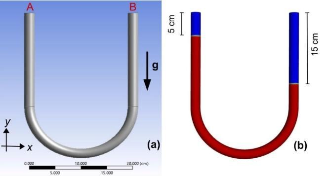
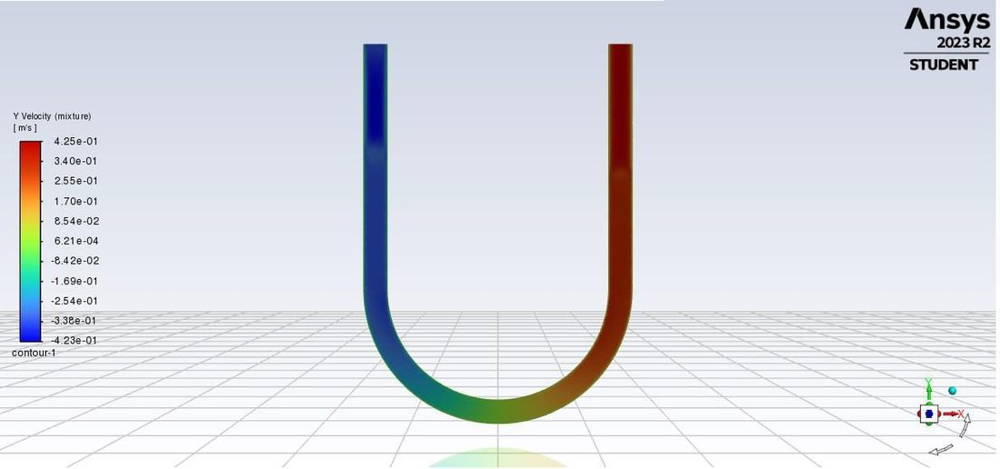
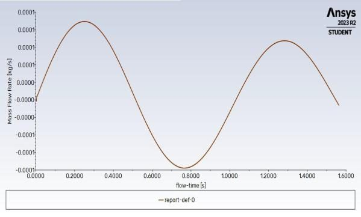
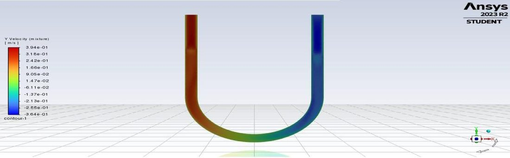

Fluid & Thermal
Oscillating U-Tube: Two-Phase VOF Flow
Damped oscillation of a water column in a U-shaped pipe, with a study of how liquid density changes the period.
- Category
- Fluid & Thermal
- Tools
- Ansys Fluent · SolidWorks · VOF
- Context
- Arizona State University
- Period
- Aug–Dec 2023
Overview
A U-shaped pipe partly filled with water and air starts with unequal water levels. A transient pressure-based VOF simulation captures the damped oscillation, including its period and the air mass flow through the open ends.
Setup and method
- 3D U-pipe geometry built in SolidWorks; both air openings are pressure outlets at zero gauge pressure and water backflow is set to zero.
- Volume fraction initialized with unequal water levels in the two legs (marked 5 cm and 15 cm in the setup figure).
- Transient run to capture the damped oscillation and the period of one full cycle.
- Extra runs with higher liquid density, including doubled water density, to see the effect on the period.
Results
The air mass flow rate follows a clean oscillation in time, and velocity fields at key instants show the oscillating water columns. Changing the density changes the oscillation period, and the model reproduces the expected physics.
Figures





Next project: Vortex Shedding Behind Circular and Elliptical Cylinders →